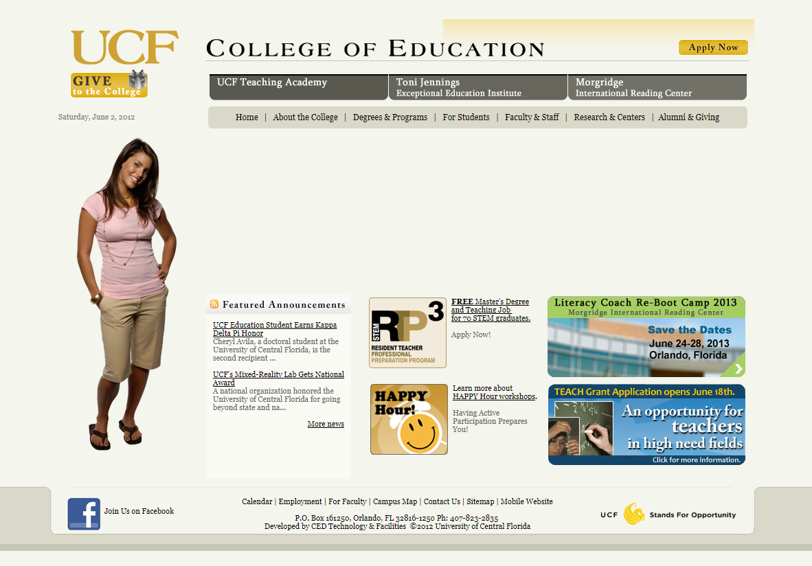
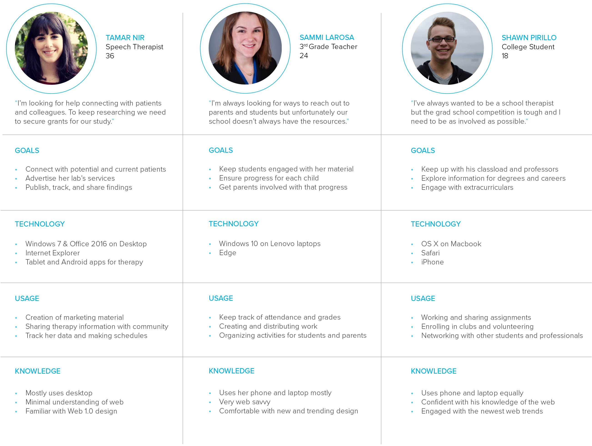
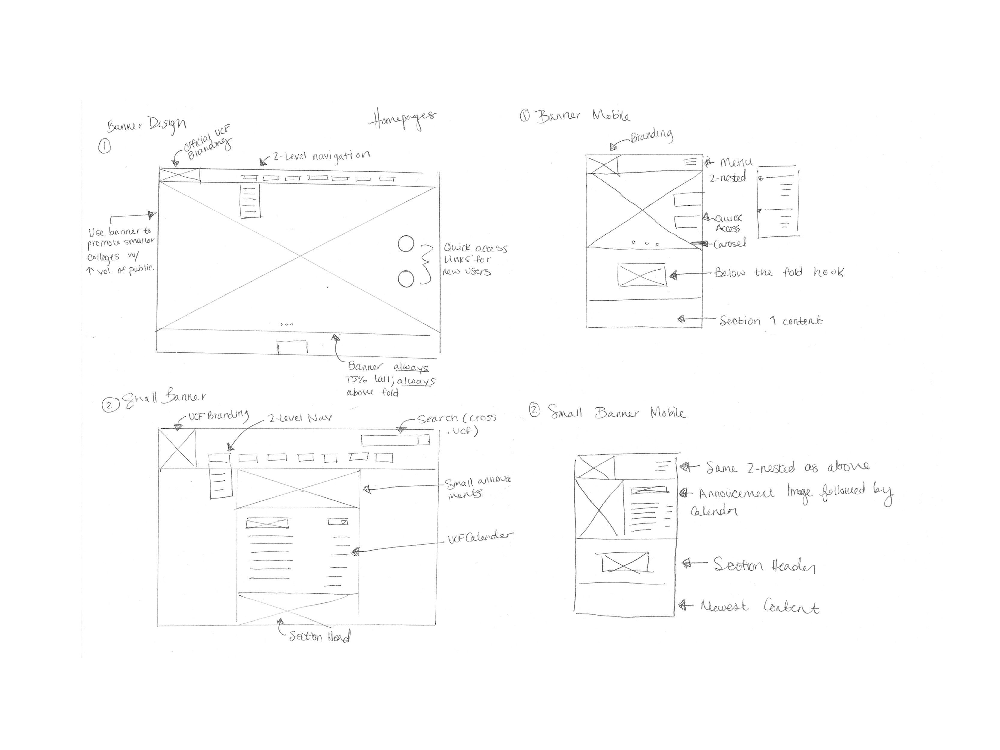

Summary
Part of a two-person team that led the design, development, and implementation of a site redesign for the third largest college at UCF, the largest university in the country. Although the design cycle is never truly linear, I've organized the case study as follows:
- Background
- Approach
- Research
- Mapping Opportunities
- Vision
- Production
- Reflection
Background
Since its opening as an small all-male engineering college in the 60s, UCF has seen unprecedented growth as it became the largest university in the US in 2016. The College of Education not only encompasses the 5,500 students enrolled and staff but also provides assistance for schools and outreach programs for the surrounding underserved counties. I was hired as the first ever designer for the college and also served as the second developer alongside my manager, Wendy, the lead developer.
The website first created for the College needed to be refreshed to represent this incredibly large and diverse audience. It needed to adhere to accessibility standards, scale both visually and technically to keep up pace with the University, act as a advertisement for prospective students and donors, meet the need of the established user base, and also meet all the brand standards UCF had come to establish. Additionally, this site served as top site in the College’s umbrella of over 200 subsites.

The original site was constructed on a technology stack consisting of Apache, Oracle Database, Coldfusion, and Flash. Much of the content did not scale to mobile or tablet and did not meet accessibility standards. Pages were constructed using nested tables and outdated marketing material.
Approach
To begin work on the tech we needed to do an in-depth technical investigation to find out what stack would be best for us. We inspected front-end frameworks such as Bootstrap and Semantic, NoSQL vs SQL, and several Javascript libraries. With a basic knowledge of all the technologies, we could reference our websites goals after UR to see which could carry us best through the scenarios.
Since we had such a large and varied audience, we wanted to approach this with our most diverse users in mind. If we could pinpoint the two extremes in user’s, then we could easily map everyone in between. We already knew how to make a website for students and faculty but we what we needed to learn was how to represent the community and outreach programs. We decided we needed to really get to know our user, create all the possible scenarios, and map their journey.
Research
We started with casting a wide net. Before interviewing our key users, we decided to open up a survey to pinpoint some of the common uses to fact check our assumptions on student usage.
With the validation of our assumptions about student users, it was time to figure out a good representation of our most diverse user base, we went out to interview some of our stakeholders to find out what was important to them. Here are some excerpts:
Family Counseling Center
We sat down with a clinic that provides conflict mediation training for couples and families, discounted childcare, and resources to help people excel in their career and homelife.
"Our work here runs off of grants. Marketing and targeting potential clients is the most important thing to us and we rely on the website to distribute this information. Often we work with people who have little access to the internet and know English as a second language so we need something that's easy to access and understand."
Early Learners Invention Programs
A statewide program that serves prekindergarten children with disabilities by preparing them, their family, and their educators for the public school system.
"We're a really small organization spread out over the state, that means we have faculty trying to communicate from over 900 miles away! We're always struggling in sharing amongst the organization, especially since we're not all tech savvy. We also have intense accessibility standards to meet for our kids and we need to be approachable to parents and teachers."
The Reading Clinic
Funded by the counties, these clinics provide after-school enrichment for K-12 students on the college campus. Their goal is to get students involved in creative expression and supplement the lack of art funding in the classroom.
"The program is struggling now because the information on the clinics and how to pay for them are hard to access. We're trying to get parents involved and they're already so busy, they don't have the time to learn how to use a website. We need a good way to promote our program and also share out announcements about the program."
Mapping Opportunities
So we understood our student users and we got so many valuable insights from our diverse stakeholders. We digested the information and created our personas to find map out goals and scenarios.

We agreed to focus in on:
- Accessibility: Let inclusivity be the key that guides the visual design. Not only will we become more approachable and friendly to the community, but it will be a good representation of the UCF brand.
- Surfacing Content: With all the directions a user could go from our homepage, we would do best to surface up the more obscure locations to assist teachers and parents.
- Modular UI: With so many different faces, we need to take our opportunity to create a modular UI so even though we have pages for students and pages for faculty, they all still look like the UCF brand.
Vision
Using our learnings from the interviews and knowing what we were prioritizing, we both agreed that migrating towards a MEAN stack would be best. For interest of time, we began implement one technology after another; I was set to graduate in a few months so we began with the least impactful changes. We replaced the existing Coldfusion script frontend with a series of Angular single page applications. We also began doing small changes like introducing SVG graphics over old JPEGs and converting the UI to Bootstrap for modular control. As predicted, there was not enough time for an entire rewrite before I left school so we left the existing database in tact.
With our tech decided upon and signed off on, we began tackling the massive IA. Using the pages we already had, the actions you could take on them, and the new pages we would need to add, we began with mapping them out on relativity.
We shaved off the fat and narrowed it down to something we could share amongst ourselves.
We began visualizing what this site could look like, indexing on the multitude of screens we know it would run on. We had several variations of basic layouts which were eventually narrowed down by the board of members in the college.

Production
The next step was to begin production on the site, using Wordpress as a rapid prototyping tool. We collaborated with the Designers of the UCF brand to give the college a refreshed logo, new plugins, and correct our color palette.
We focused heavily on accessibility, opening up a feedback loop with experts in the college and getting constant feedback from our core userbase.
All said and done, the new website was pushed to the world 6 months after I graduated and left my post at the college to go join Microsoft with my husband.

The new UI features a remastered two-tiered navigation and a quick access menu. It also surfaces the calendar to help visibility for the community. The banner we added also showcases some of the lesser-known schools inside the college, such as the Exercise Science division. It also has room for marketing material that the university sends over. Within this is also upgraded file sharing and dedicated pages for organizations' outreach programs. The new site assists the target users we defined a year before the project launched.
Reflection
Being able to work on a website and a brand that means so much to the community I grew up in was an incredible experience. This project taught me some of my most valued skills, both technical and social. Because our development team was only two people and I was the only designer, I was able to see the project through every step and directly interact with our stakeholders. I was honored to be able to assist so many outreach programs and also my fellow students. In the end, I would have loved to finish implementing the new database and help the backend handle the inevitable expansion. I got to learn about several new technological stacks which was a great growing experience. I would have loved to also see the visuals all the way through, but the current UI is both fresh and simplified. This was one of the most impactful projects of my career and I will always be proud of the work we did.